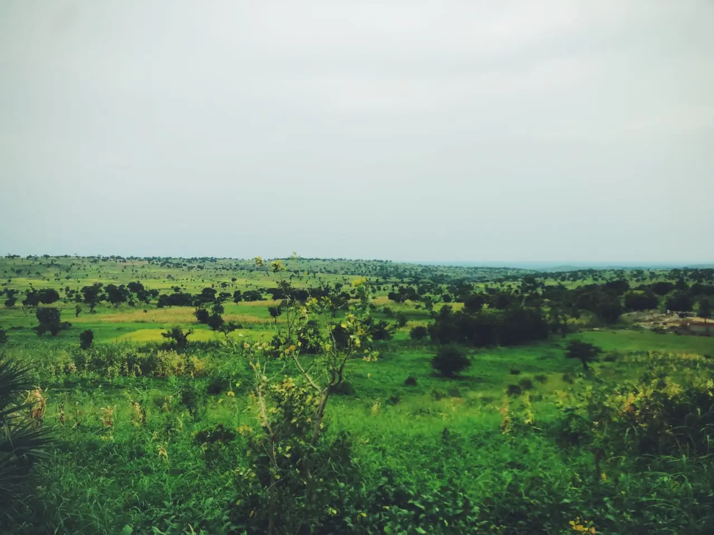

Weather
Temperature: 28°C
Conditions: Partly Cloudy
Wind Speed: 12 km/h
Wind Chill: N/A
About Nigeria
- Capital: Abuja
- Population: Over 220 million
- Area: 923,768 km²
- Official Language: English
- Currency: Naira (₦)
Top Attractions
- Yankari National Park
- Olumo Rock, Abeokuta
- Nike Art Gallery, Lagos
- Zuma Rock